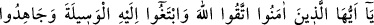
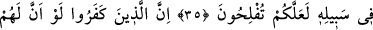
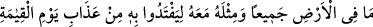
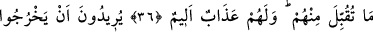
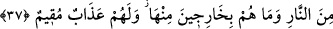

O’NA YAKLAŞMAYA
YOL ARAMAK
35- Ey îman edenler! Allah’tan korkun. O’na yaklaşmaya yol arayın ve yolunda
cihâd edin ki kurtuluşa eresiniz.
36- Şüphe yok ki kâfir olanlar, yeryüzündeki her şey ve bunun yanında da bir o
kadarı kendilerinin olsa da kıyâmet gününün azabından kurtulmak için onları fidye
verseler onlardan asla kabul edilmez; onlar için acı bir azap vardır.
37- Ateşten çıkmak isterler, fakat onlar oradan çıkacak değillerdir. Onlar için
devamlı bir azap vardır.
“Ey îman edenler! Allah’tan korkun.” Yani, O’nun azâbından korkun ve O’na karşı
mâsiyetlerden sakının.
Kendiniz için “O’na”, yani O’nun mükâfâtına ve O’na “yaklaşmaya yol arayın.”
Yani salih amellerle O’na yaklaşmaya çalışın.
Atâ (r.a.), vesîlenin cennetin en üstün derecesi olduğunu söylemiştir.
Bir hadiste Rasûlullah (s.a.v.) şöyle buyurmuştur: “Allah’tan benim için vesîleyi
isteyiniz. Çünkü o, cennette sâdece tek bir kulun erişeceği derecedir. O kulun, ben
olmamı umuyorum.”[306]
Bir başka hadiste de şöyle buyurulmuştur: “Kim ezanı duyduğu vakit “Ey Allahım!
Ey bu tam çağrının ve başlayan namazın sahibi Allahım! Efendimiz Muhammed
(s.a.v.)’e vesîleyi ve fazîleti ver. Onu kendisine vaadettiğin yüce makama ulaştır.”
diye duâ ederse kıyâmet gününde şefaatime nâil olur.”[307]
Molla Fenârî, Tefsîr-i Fatiha adlı kitabında şöyle demiştir: “Vesîleye gelince o, Adn
cennetindeki en yüksek derecedir ki bu Rasûlullah (s.a.v.)’e âittir. Burası ona ümmetinin
duâsıyla verilecektir. Hak Sübhanehû, gizlediği bir hikmet gereği bunu böyle yapmıştır.
Biz de Rasûlullah (s.a.v) sebebiyle Allah tarafından mutluluğa erdik. Onun sâyesinde
“insanlar için çıkarılmış en hayırlı ümmet” (Âl-i İmrân, 3/110) olduk. Yine Allah,
onunla peygamberlere son verdiği gibi onun sâyesinde de ümmetleri hitâma erdirmiştir.
Rasûlullah (s.a.v.), kendisine Allah tarafından söylemesi emrolunduğu gibi bir